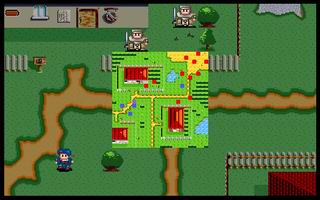

第一章 袭击

 LV1剑士 雷特 （HP198,AP46,DP26,HIT114,EV4,MV4,短剑,硬皮甲,药草x2）
LV1剑士 雷特 （HP198,AP46,DP26,HIT114,EV4,MV4,短剑,硬皮甲,药草x2）
 LV1法师 米兰 （HP80,AP35,DP27,HIT84,EV4,MV4,长棍,法师袍,火流星,聚合气）
LV1法师 米兰 （HP80,AP35,DP27,HIT84,EV4,MV4,长棍,法师袍,火流星,聚合气）
 LV3战士 克隆 （HP100,AP46,DP33,HIT108,EV8,MV4,短剑,皮甲,药草）
LV3战士 克隆 （HP100,AP46,DP33,HIT108,EV8,MV4,短剑,皮甲,药草）
 LV2战士 艾利欧（NPC） （HP100,AP55,DP24,HIT106,EV6,MV4）
LV2战士 艾利欧（NPC） （HP100,AP55,DP24,HIT106,EV6,MV4）
本关敌人：
 LV3 小队长 （HP180,AP87,DP36,HIT94,EV9,MV4）
LV3 小队长 （HP180,AP87,DP36,HIT94,EV9,MV4）
 LV1 士兵x10 （HP100,AP42,DP12,HIT101,EV1,MV4）
LV1 士兵x10 （HP100,AP42,DP12,HIT101,EV1,MV4）
胜利条件：敌人全灭
失败条件：雷特或艾利欧死亡
战后加入：
LV2 战士 艾利欧 （HP100,AP57,DP24,HIT104,EV4,MV4,短剑,皮甲,药草）
战后报酬：
$500G/$1500G
攻略简要：
一开始艾利欧被敌军包围，而艾利欧会往雷特的方向移动，因此要立即将众人往艾利欧方向移动，以免他被围攻至死。由于艾利欧会粘在雷特身旁，因此等众人会合后，最好让克隆在前来挡住敌人，免得艾利欧自行冲上前被砍死。此关一定要善用米兰的火流星，把士兵打到快死（不要一次打死），再由雷特或克隆上前补最后一刀，但至少要留两发来对付小队长。如果想轻松获胜，也可以利用无限攻击距离的密技清掉挡住艾利欧的士兵（此秘籍会极大影响游戏乐趣，不建议使用），等艾利欧一脱困便可以边绕着右下房子边远距打敌，逐一清光。
战后商店道具:
武器： |
防具： |
道具： |
剧情对话：
远古惨烈的圣魔之战,诸神牺牲无数,才封印了最强的邪恶之力...
如今,在野心家的阴谋之下,浩劫即将再度降临人间...
这是一段很久很久的历史了...
在远古时代,有两股势力正互相对战
他们就是传说中的圣族及魔族
当时魔族的领导者是大邪神
其强大无比的力量
一度使得圣族落于下风
最后，圣族派出了精英的十二战士
对大邪神展开突袭，以求结束战争
最后大邪神虽然被击倒了
但十二战士也伤亡殆尽
为了避免大邪神再度复活
剩余的战士将大邪神的躯体
封印在遥远空间的一块小岛上
并守护此地以防封印失效
这个小岛
便是后来所称的
达拉尼亚岛
失去首领的魔族
再也无力和圣族对抗
仅剩的少数魔族
只好利用大邪神的剩余魔力
纷纷逃到达拉尼亚岛上
他们虽然想要设法解除封印
但在圣族战士的守护下
从来没有成功过
不过魔族的行动
却对后来迁居到岛上的人类
造成了极大的困扰
为了对抗魔族的不断侵扰
原本散居的人类组成了军队
终于揭阻了魔族的骚扰行为
击退魔族之后
人类为了预防魔族卷土重来
便倡导成立一个有组织的国家
建立常备性的军队
而率领军队有功的卡亚那将军
便被推举来领导国家
这就是『罗特帝亚』王国的由来
在许多年以后
消失已久的魔族
突然大举侵攻王城
而原本镇守边疆的大将军哈奇
也趁着这个机会
突然起兵叛乱
皇宫在一夕之间，毁于大火之中
只有忠心的御前侍卫克隆
受到国王亚美达二世的遗托
将尚在襁褓之中的二王子雷特
从一片混乱中救了出来
为了避免哈奇的追杀
克隆在南方偏远的利达村定居
除了隐姓埋名外
还特地在当地取妻生子
以避免引人耳目
但是在妻子佩亚生产时
却不幸因难产而去世
强忍悲痛的克隆
便一手将雷特、独生女米兰
及后来收养的艾利欧
茹苦含辛地抚养长大
就这样过了十几年...
在雷特十八岁的生日当天
克隆将雷特叫到跟前
并告诉他真正的身世
克隆:雷特，我的爱子...不！我的王子殿下...请原谅我不得不隐瞒此事18年的苦衷。我原是您父王--神圣伟大的罗特帝亚国王亚美达二世的近身侍卫长。十八年前，原本和平富强的罗特帝亚王国，在邪恶的大将军哈奇的觊觎之下，为了一己的野心，勾结魔族起兵作乱，不仅大逆不道�s杀您的父王，就连两位刚满周岁的王子殿下都不放过，在您父王--我忠心所向的君王托孤遗命下，我救出了您--我的王子殿下，逃到此地，忍辱含悲地过了一十八年。现在，我将此事禀告予您--我的殿下...
雷特:...不!
克隆:罗特帝亚王国的复国之君!请勇敢地站出来!领导正义之士，让您那含冤未雪的父王，和众多飘游的灵魂得以安息，让罗特帝亚祖国的光芒再次照耀在这乌云密布的达拉尼亚岛各个角落!
悲愤不已的雷特
决定替父兄报仇
就在这个时候...
米兰:父亲!不好了!刚才有一队士兵突然闯入村庄内,说是要抓雷特大哥!
克隆:什...什么!什么!难道我们长久隐蔽在此的事情,已经走漏了吗?
米兰:现在艾利欧大哥已经将他们拦了下来,我怕他们会引起冲突,赶快回来告诉您!
克隆:唉!这下可麻烦了..我们赶快出去看看情况再说吧!
雷特:克隆伯父!我也一起去!
克隆:殿下,请先留在此地,外面实在太危险了!
雷特:不!我怎么可以为了自身的安全,置你们安危于不顾呢?更何况迟早要讨伐哈奇的,此时不战,更待何时?
克隆:...好吧!
小队长:你是什么东西?竟敢挡住大爷们的路?若知道雷特的下落,就赶快将他交出来,不然别怪我们心狠手辣!
艾利欧:呸,你们这些走狗,枉费你们还是王国的士兵,竟然还背叛王国,甘心为虎作伥!
小队长:哼!你胡说什么?哈奇大帝已经下了全国的通缉令,要我们搜捕十余年前残留的王族叛党....看你的样子,难道是想造反?
艾利欧:造反?不错!我不会让你们这些卑鄙的家伙,碰到雷特王子一根汗毛的!
小队长:嘿!原来你也是叛党一伙的!那正好!来人呀!将他拿下!
战斗结束
米兰:雷特大哥,你没事吧?
雷特:我还好,克隆伯父和艾利欧那边的情形如何?
克隆:没关系,不碍事的,想不到我们隐姓埋名了这么久,到头来还是被发现了.看来这里不能再待下去了...艾利欧,为师和米兰要与雷特殿下要到其它地方去,你就暂时留在这里,没必要和我们一同涉险....
艾利欧:师傅!我要和你们一起走!我是个孤儿,要不是你的收养,我造就流落街头了!你们要离开这里的话,让我跟你们走吧!
米兰:父亲!我看你就答应艾利欧大哥吧!不然军队再来的话,艾利欧大哥可就麻烦了!
克隆:嗯....好吧!不过艾利欧你要听着:往后路途可能多凶险,我希望你以后能全力保护殿下的安全.你能做得到吗?
艾利欧:没问题!只要雷特....殿下有任何吩咐,赴汤蹈火在所不辞!
克隆:嗯,很好!不愧是我的好弟子!
雷特:艾利欧,对你的这番心意,我实在很感激,只是...
米兰:雷特大哥!别这样嘛!在路上多个伙伴,不是更能够彼此照应吗?
雷特:我是担心你和艾利欧的安全....
米兰:雷特大哥,你太见外了!依我们刚才的作战表现,至少能助你一臂之力吧!更何况....
克隆:殿下!就请你答应他们同行吧!为了往后的复国大业,我们的确需要更多的人手协助殿下的.
雷特:....既然如此,往后就麻烦大家了!
第一章完